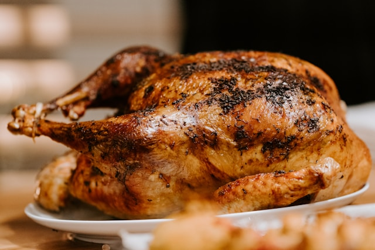

Home
Dijon Mustard Roast Chicken
Original recipe: Dijon mustard roast chicken and tarragon gravy

My favourite way to improve a roast chicken is to dry brine it. This dries the skin so you'll get the crispiest chicken skin ever. You can keep it simple using only salt, or use Dijon mustard as I do here, which adds a subtle flavour and tenderises the meat.
Ingredients
- 1 large whole chicken (1.8–2 kg/4lb–4lb 8oz)
- 100g/3½oz Dijon mustard, plus 2 tsp for the gravy (about ½ a jar)
- Olive oil
- lemon
- thyme
- carrots
- onions
- celery
- garlic
- white wine
- chicken stock
- worcestershire sauce
- soy sauce
- tarragon
- butter
- sugar
- vinegar
- salt
Preparation
- Season the chicken with salt and then cover with the Dijon mustard, including the cavity. Place on a rack or trivet over an oven tray and leave uncovered in the fridge for 24 hours or up to 2 days. This dries out the skin and intensifies the flavour of the bird. (See the Recipe Tips for using just salt.)
- Wipe the mustard from the chicken skin before roasting so it doesn’t burn, then add a good amount of oil. Stuff the cavity with the lemon and fresh thyme.
- Preheat the oven to 170C/150C Fan/Gas 3½. Fill a large tray with the carrots, onion, celery and garlic. Season with salt. They catch the drippings for the gravy and turn into a rich side. Set the chicken on a wire rack over the tray. This allows air to circulate and ensures even roasting. Roast for 1½ hours.
- Turn up the heat to 240C/225C Fan/Gas 8 and roast for a further 20–30 minutes, or until the chicken is cooked through. The chicken is cooked through when the juices run clear with no trace of pink when the thickest part of the leg, between the drumstick and the thigh, is pierced with a skewer
- Remove the bird and leave it to rest for 10–15 minutes while you make the gravy. Strain the drippings out of the vegetables and set the vegetables aside.
- Add the drippings into a pan with the white wine, chicken stock, Worcestershire sauce, soy sauce, and mustard. Bring to a simmer and leave to reduce for 5–10 minutes, stirring often.
- Turn the heat right down, add the fresh tarragon and butter, and stir gently to emulsify. Check for seasoning, sometimes I’ll add a little extra salt, sugar or vinegar to brighten it up.
- Carve the chicken and serve with the gravy and roasted vegetables alongside.